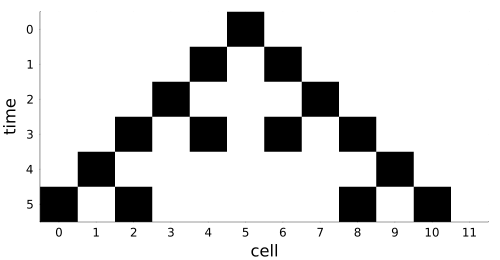

Cellular automata over groups
Simon Frost
- Overview
- Groups
- Configurations and shifts
- Cellular automata
- Cellular automata commute with the shifts
- Groups that are not grids
- Equality at a single cell
- The same automaton in CellularAutomataCore
Overview
A cellular automaton is usually drawn on a grid, but nothing in its definition needs one. All it needs is a set of cells on which a group acts, so that every cell sees the same neighbourhood from where it stands. This vignette introduces that setting (Ceccherini-Silberstein and Coornaert 2010; Castillo-Ramirez et al. 2025): groups, configurations, shifts and cellular automata. It also shows the two facts the rest of the package builds on. A cellular automaton commutes with the shifts, and so it is determined by what it does at a single cell.
ENV["GKSwstype"] = "100"
using CategoricalCellularAutomata
using CellularAutomataCore: CellularAutomataCore, Wolfram, Torus, CAProblem, solve
using Plots
using RandomGroups
The cells of a ring of n cells are the elements of the cyclic group Z_n, and moving along the ring is adding modulo n:
Z = CyclicGroup(12)
(elements(Z), mul(Z, 7, 9), inverse(Z, 5), identity_element(Z))(0:11, 4, 7, 0)The cells of an n1 × n2 torus are the elements of Z_n1 × Z_n2, written as 0-based tuples:
T = TorusGroup(3, 4)
(length(T), elements(T)[1:4], mul(T, (2, 3), (1, 1)))(12, [(0, 0), (1, 0), (2, 0), (0, 1)], (0, 0))Any finite group will do, including non-abelian ones. Here is the symmetric group S3, built from the six permutations of three objects and their composition. Its Cayley table is computed and checked to be a group.
perms = [[1, 2, 3], [2, 1, 3], [1, 3, 2], [3, 2, 1], [2, 3, 1], [3, 1, 2]]
S3 = FiniteGroup(perms, (a, b) -> a[b])
(length(S3), mul(S3, 2, 3), mul(S3, 3, 2), label(S3, mul(S3, 2, 3)))(6, 5, 6, [2, 3, 1])The order of multiplication matters in S3: 2 3 and 3 2 are different elements.
Configurations and shifts
A configuration assigns a state to every cell. It is stored as an array of the group’s shape: a vector for a cyclic group, a matrix for a two-dimensional torus. On a torus this is exactly the state array of CellularAutomataCore.
x = Configuration(Z, [0, 0, 0, 0, 0, 1, 0, 0, 0, 0, 0, 0])
(x[5], x[6])(1, 0)The elements of Z_12 are 0, …, 11, so the live cell, sixth in the vector, is the element 5.
The group acts on configurations by shifting them, (g·x)(h) = x(hg): the value that was at g moves to the identity. On a ring, shifting by g is a rotation by g cells towards 0:
println(parent(x))
println(parent(shift(x, 3)))[0, 0, 0, 0, 0, 1, 0, 0, 0, 0, 0, 0]
[0, 0, 1, 0, 0, 0, 0, 0, 0, 0, 0, 0]Cellular automata
A cellular automaton over a group G is given by a finite memory set S ⊂ G and a local rule μ, which maps the states on the memory set to a new state. Applied to a configuration x, it gives the configuration
τ(x)(g) = μ((x(s g))_{s ∈ S}).Every cell g reads the cells s g for s ∈ S. On a ring these are its neighbours at offsets s. The local rule receives their states as a tuple, in the order of S. Elementary rule 90 replaces each cell by the exclusive or of its two neighbours, at offsets -1 (which is 11 in Z_12) and +1:
B = FinAlphabet(0:1)
rule90 = CellularAutomaton(Z, [11, 1], p -> xor(p...); dom=B)CellularAutomaton over CyclicGroup(12) with memory set [11, 1]: [0, 1] → [0, 1]The alphabet B is the set of states. Iterating the automaton from a single live cell draws Pascal’s triangle modulo 2, until it reaches the other side of the ring:
function spacetime(τ, x, steps)
rows = [parent(x)]
for _ in 1:steps
x = τ(x)
push!(rows, parent(x))
end
return permutedims(reduce(hcat, rows))
end
heatmap(elements(Z), 0:5, spacetime(rule90, x, 5); c=[:white, :black], yflip=true,
colorbar=false, xlabel="cell", ylabel="time", xticks=elements(Z), size=(500, 260))
Cellular automata commute with the shifts
Shifting a configuration and then applying a cellular automaton gives the same result as applying it and then shifting. This is because every cell uses the same rule and reads its memory set relative to itself:
y = Configuration(Z, rand(Xoshiro(1), 0:1, 12))
all(rule90(shift(y, g)) == shift(rule90(y), g) for g in elements(Z))trueis_equivariant checks this for any map of configurations, trying every configuration when there are few enough (here 2^12):
is_equivariant(rule90, Z, B)trueA map that treats one cell differently, say by flipping cell 0 after applying rule 90, is not a cellular automaton:
flipped(x) = Configuration(g -> g == 0 ? 1 - rule90(x)[g] : rule90(x)[g], Z)
is_equivariant(flipped, Z, B)falseGroups that are not grids
The definition makes sense over any group. Over S3, a cell g reads the cells s g for s in its memory set. Here the rule is a majority vote over three elements:
majority = CellularAutomaton(S3, [2, 3, 5], p -> Int(sum(p) >= 2); dom=B)
z = Configuration(S3, [1, 0, 1, 1, 0, 0])
(parent(majority(z)), is_equivariant(majority, S3, B))([0, 1, 0, 0, 1, 1], true)S3 is not abelian, so s g and g s differ. Shifts act on the right (x(h g)) and the memory set on the left (x(s g)). That is why the two commute even here.
Equality at a single cell
Because a cellular automaton commutes with the shifts, it is determined by its value at the identity cell, that is, by its local rule. Two automata are equal exactly when their local rules agree on every pattern over the union of their memory sets (Castillo-Ramirez et al. 2026). This is what == checks. Here rule 90 is written with arithmetic modulo 2 and with a memory set that includes the cell itself, which the rule ignores:
rule90b = CellularAutomaton(Z, [11, 0, 1], p -> (p[1] + p[3]) % 2; dom=B)
rule90 == rule90btrueA different rule is told apart in the same way:
rule150 = CellularAutomaton(Z, [11, 0, 1], p -> (p[1] + p[2] + p[3]) % 2; dom=B)
rule90 == rule150falseThe check enumerates 2^3 patterns, not the 2^12 configurations of the ring, and the number of patterns does not depend on the size of the ring.
The same automaton in CellularAutomataCore
A deterministic rule of CellularAutomataCore on a periodic lattice, whose neighbourhood is the same everywhere, is a cellular automaton over the lattice’s group. Converting Wolfram(90) on a ring of 12 cells gives an automaton over Z_12. Its memory set is the cell itself followed by the neighbours, and it equals the rule above:
core90 = CellularAutomaton(Wolfram(90), Torus(12); alphabet=FinAlphabet(Int8[0, 1]))
(torus_group(Torus(12)), memory_set(core90))(CyclicGroup(12), [0, 11, 1])rule90_int8 = CellularAutomaton(Z, [11, 1], p -> xor(p...); dom=FinAlphabet(Int8[0, 1]))
core90 == rule90_int8trueThe conversion also runs the other way. CAProblem(τ, u0, tspan) turns an automaton over a cyclic or torus group into a CellularAutomataCore problem, so that it runs on any backend:
u0 = Int8.(parent(x))
solve(CAProblem(rule90_int8, u0, 6)).u[end] == solve(CAProblem(Wolfram(90), u0, 6)).u[end]trueThe next vignette composes cellular automata, and shows that the composite of two automata is again one.
Castillo-Ramirez, Alonso, Alejandro Vazquez-Aceves, and Angel Zaldivar-Corichi. 2025. Categorical Products of Cellular Automata. https://arxiv.org/abs/2503.21567.
Castillo-Ramirez, Alonso, Alejandro Vazquez-Aceves, and Angel Zaldivar-Corichi. 2026. A Categorical Framework for Cellular Automata. https://arxiv.org/abs/2602.04049.
Ceccherini-Silberstein, Tullio, and Michel Coornaert. 2010. Cellular Automata and Groups. Springer Monographs in Mathematics. Springer. https://doi.org/10.1007/978-3-642-14034-1.